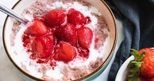

Freya's Strawberry Porridge

Freya's Strawberry Porridge is a comforting and slightly sweet porridge fit for the goddess of love and beauty, featuring oats and strawberries with a touch of honey.
Freya's Strawberry Porridge Recipe
Ingredients:
- 1 cup rolled oats
- 2 cups milk (or a non-dairy alternative)
- 1/2 cup water
- 1/2 tsp ground cinnamon
- 1 tbsp honey or maple syrup (adjust to taste)
- 1 cup fresh or frozen strawberries (sliced, if fresh)
- 1/4 tsp vanilla extract (optional)
- A pinch of salt
- Optional toppings: chopped nuts, seeds, more strawberries, or yogurt
Instructions:
- Cook the Oats:
- In a medium saucepan, combine the oats, milk, water, and a pinch of salt. Bring to a simmer over medium heat.
- Add the Flavor:
- Stir in the ground cinnamon, vanilla extract (if using), and honey or maple syrup. Reduce the heat to low and cook, stirring frequently, for about 5-7 minutes or until the oats are creamy.
- Incorporate Strawberries:
- Add the strawberries during the last 2 minutes of cooking. If using frozen strawberries, allow them to heat through and break down slightly.
- Serve:
- Spoon the porridge into bowls and top with your favorite garnishes, such as additional strawberries, nuts, seeds, or a dollop of yogurt.
Freya's Strawberry Porridge is a sweet, wholesome start to your day-simple, nourishing, and filled with the vibrant warmth of strawberries.
Homepage